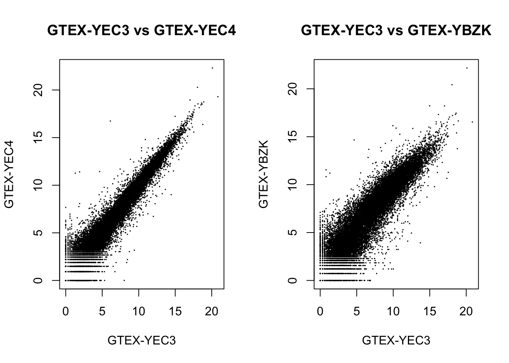

Last updated: 2025-04-17
Checks: 7 0
Knit directory: myproject/
This reproducible R Markdown analysis was created with workflowr (version 1.7.1). The Checks tab describes the reproducibility checks that were applied when the results were created. The Past versions tab lists the development history.
Great! Since the R Markdown file has been committed to the Git repository, you know the exact version of the code that produced these results.
Great job! The global environment was empty. Objects defined in the global environment can affect the analysis in your R Markdown file in unknown ways. For reproduciblity it’s best to always run the code in an empty environment.
The command set.seed(20250327) was run prior to running
the code in the R Markdown file. Setting a seed ensures that any results
that rely on randomness, e.g. subsampling or permutations, are
reproducible.
Great job! Recording the operating system, R version, and package versions is critical for reproducibility.
Nice! There were no cached chunks for this analysis, so you can be confident that you successfully produced the results during this run.
Great job! Using relative paths to the files within your workflowr project makes it easier to run your code on other machines.
Great! You are using Git for version control. Tracking code development and connecting the code version to the results is critical for reproducibility.
The results in this page were generated with repository version 3c6673f. See the Past versions tab to see a history of the changes made to the R Markdown and HTML files.
Note that you need to be careful to ensure that all relevant files for
the analysis have been committed to Git prior to generating the results
(you can use wflow_publish or
wflow_git_commit). workflowr only checks the R Markdown
file, but you know if there are other scripts or data files that it
depends on. Below is the status of the Git repository when the results
were generated:
Ignored files:
Ignored: .DS_Store
Ignored: .Rhistory
Ignored: .Rproj.user/
Ignored: analysis/.DS_Store
Ignored: data/.DS_Store
Untracked files:
Untracked: analysis/normalized_counts.txt
Untracked: analysis/prs_blood_cell.txt
Untracked: analysis/prs_immune.txt
Untracked: data/GTEx_v8.bed
Untracked: data/GTEx_v8.bim
Untracked: data/GTEx_v8.bk
Untracked: data/GTEx_v8.fam
Untracked: data/GTEx_v8.rds
Untracked: data/Whole_Blood.v8.covariates.txt
Untracked: data/blood_cell/
Untracked: data/gene_reads_2017-06-05_v8_whole_blood.gct
Untracked: data/gene_tpm_2017-06-05_v8_whole_blood.gct.gz
Untracked: data/immune/
Unstaged changes:
Modified: myproject.Rproj
Note that any generated files, e.g. HTML, png, CSS, etc., are not included in this status report because it is ok for generated content to have uncommitted changes.
These are the previous versions of the repository in which changes were
made to the R Markdown
(analysis/expression_normalization.Rmd) and HTML
(docs/expression_normalization.html) files. If you’ve
configured a remote Git repository (see ?wflow_git_remote),
click on the hyperlinks in the table below to view the files as they
were in that past version.
| File | Version | Author | Date | Message |
|---|---|---|---|---|
| Rmd | 3c6673f | ElisaChen | 2025-04-17 | wflow_publish("analysis/expression_normalization.Rmd") |
| html | a14b960 | ElisaChen | 2025-04-17 | Build site. |
| Rmd | 3d07189 | ElisaChen | 2025-04-17 | wflow_publish(c("analysis/about.Rmd", "analysis/expression_normalization.Rmd", |
# Load the gene expression data
gene_expr_file <- "data/gene_reads_2017-06-05_v8_whole_blood.gct"
raw_count_df <- fread(gene_expr_file, header = TRUE)
gene_name <- raw_count_df$Description
raw_count_df <- raw_count_df[, -c(1:3)]
# modify GTEx sample names matching names used in PRS data
colnames(raw_count_df) <- sub("^(GTEX-[^-.]+).*", "\\1", colnames(raw_count_df))# load PRS data for blood trait
prs_file <- "analysis/prs_blood_cell.txt"
prs_blood <- fread(prs_file, header = T, stringsAsFactors = FALSE)
# obtain GTEx sample id
id <- prs_blood$sample_id
# Load the PRS data for immune trait
prs_file <- "analysis/prs_immune.txt"
prs_immune <- fread(prs_file, header = T, stringsAsFactors = FALSE)
# subset samples
matching_samples <- intersect(id, colnames(raw_count_df))
prs_blood <- prs_blood[prs_blood$sample_id %in% matching_samples, ]
prs_immune <- prs_immune[prs_immune$sample_id %in% matching_samples, ]
final_count <- raw_count_df[, ..matching_samples]
dim(final_count) [1] 56200 670# Loop through each column (starting from the second column, as the first column is sample_id)
for (i in 2:ncol(prs_blood)) {
# Extract the PRS values for the current trait
prs_trait <- prs_blood[[i]]
# Calculate the 25th and 75th percentiles for the trait
p25 <- quantile(prs_trait, 0.25, na.rm = TRUE)
p75 <- quantile(prs_trait, 0.75, na.rm = TRUE)
# Create a new column for the group classification based on the percentiles
group <- ifelse(prs_trait > p75, "High",
ifelse(prs_trait < p25, "Low", "Median"))
# Assign the group to the new column for this trait
prs_blood[[paste0("group_", colnames(prs_blood)[i])]] <- as.factor(group)
}# Loop through each column (starting from the second column, as the first column is sample_id)
for (i in 2:ncol(prs_immune)) {
# Extract the PRS values for the current trait
prs_trait <- prs_immune[[i]]
# Calculate the 25th and 75th percentiles for the trait
p25 <- quantile(prs_trait, 0.25, na.rm = TRUE)
p75 <- quantile(prs_trait, 0.75, na.rm = TRUE)
# Create a new column for the group classification based on the percentiles
group <- ifelse(prs_trait > p75, "High",
ifelse(prs_trait < p25, "Low", "Median"))
# Assign the group to the new column for this trait
prs_immune[[paste0("group_", colnames(prs_immune)[i])]] <- as.factor(group)
}The size factor is calculated as follows:
For each gene, the geometric mean of counts across all samples is computed (this serves as the pseudo baseline expression).
For each gene, the ratio of its count in a specific sample to the pseudo-baseline expression is calculated (e.g., Sample A/pseudo baseline, Sample B/pseudo baseline).
For each sample, the median of these ratios is computed, which results in the size factor for that sample.
Thus, DESeq2 normalizes for both sequencing depth and RNA composition differences, and this process is independent of the design matrix, meaning it is unaffected by the specific traits (whether blood or immune traits) used in the analysis.
# Create the DESeq2 object (DESeqDataSet) from the raw count matrix and PRS
dds <- DESeqDataSetFromMatrix(countData = as.matrix(final_count),
colData = prs_blood,
design = ~ group_PGS000163)
rownames(dds) <- gene_name
# remove genes with no reads
keep_genes <- rowSums(counts(dds)) > 0
dds <- dds[keep_genes, ]
ddsclass: DESeqDataSet
dim: 53136 670
metadata(1): version
assays(1): counts
rownames(53136): DDX11L1 WASH7P ... MT-TT MT-TP
rowData names(0):
colnames(670): GTEX-111YS GTEX-1122O ... GTEX-ZXES GTEX-ZXG5
colData names(59): sample_id PGS000163 ... group_PGS000190
group_PGS000191# Estimate size factors for normalization
dds <- estimateSizeFactors(dds)
outliers <- which(sizeFactors(dds) > 4)
plot(sizeFactors(dds), colSums(counts(dds)), ylab = "library sizes",
xlab = "size factors", cex = .5)
text(sizeFactors(dds)[outliers], colSums(counts(dds))[outliers],
labels = colnames(dds)[outliers], pos = 2, cex = .5, col = "red")
| Version | Author | Date |
|---|---|---|
| a14b960 | ElisaChen | 2025-04-17 |
# obtain normalized counts
normalized_counts <- counts(dds, normalized=TRUE)
#write.table(normalized_counts, "analysis/normalized_counts.txt",
# sep="\t", row.names = T, col.names = T)# load TPM counts data
tpm_file <- "data/gene_tpm_2017-06-05_v8_whole_blood.gct.gz"
tpm_count_df <- fread(tpm_file, header = TRUE, stringsAsFactors = FALSE)
colnames(tpm_count_df) <- sub("^(GTEX-[^-.]+).*", "\\1", colnames(tpm_count_df))
# subset samples & remove no read genes
tpm_subset_df <- tpm_count_df[, matching_samples, with = FALSE]
tpm_subset_df <- tpm_subset_df[rowSums(tpm_subset_df[, -1, with = FALSE]) > 0, ]
# convert into matrix
tpm_count <- as.matrix(tpm_subset_df)
# perform quantile normalization
qn_counts <- preprocessCore::normalize.quantiles(tpm_count)
colnames(qn_counts) <- matching_samplesboxplot(log2(counts(dds) + 1)[, c(1:10, outliers)],
main = "Raw read counts", ylab = "log2(read counts)", cex = .6,
col = c(rep("lightblue", 10), "red"), las = 2)
| Version | Author | Date |
|---|---|---|
| a14b960 | ElisaChen | 2025-04-17 |
boxplot(log2(counts(dds, normalize = TRUE) + 1)[, c(1:10, outliers)],
main = "DESeq2 normalized read counts", ylab = "log2(read counts)",
cex = .6, col = c(rep("lightblue", 10), "red"), las = 2)
| Version | Author | Date |
|---|---|---|
| a14b960 | ElisaChen | 2025-04-17 |
boxplot(log2(qn_counts + 1)[, c(1:10, outliers)],
main = "Quantile normalized read counts", ylab = "log2(read counts)",
cex = .6, col = c(rep("lightblue", 10), "red"), las = 2)
| Version | Author | Date |
|---|---|---|
| a14b960 | ElisaChen | 2025-04-17 |
sessionInfo()R version 4.2.2 (2022-10-31)
Platform: x86_64-apple-darwin17.0 (64-bit)
Running under: macOS Big Sur ... 10.16
Matrix products: default
BLAS: /Library/Frameworks/R.framework/Versions/4.2/Resources/lib/libRblas.0.dylib
LAPACK: /Library/Frameworks/R.framework/Versions/4.2/Resources/lib/libRlapack.dylib
locale:
[1] en_US.UTF-8/en_US.UTF-8/en_US.UTF-8/C/en_US.UTF-8/en_US.UTF-8
attached base packages:
[1] stats4 stats graphics grDevices utils datasets methods
[8] base
other attached packages:
[1] ggplot2_3.5.1 preprocessCore_1.60.2
[3] DESeq2_1.38.3 SummarizedExperiment_1.28.0
[5] Biobase_2.58.0 MatrixGenerics_1.10.0
[7] matrixStats_1.2.0 GenomicRanges_1.50.2
[9] GenomeInfoDb_1.34.9 IRanges_2.32.0
[11] S4Vectors_0.36.2 BiocGenerics_0.44.0
[13] dplyr_1.1.4 data.table_1.16.4
[15] workflowr_1.7.1
loaded via a namespace (and not attached):
[1] httr_1.4.7 sass_0.4.9 bit64_4.6.0-1
[4] jsonlite_1.8.9 R.utils_2.12.3 bslib_0.9.0
[7] getPass_0.2-4 blob_1.2.4 GenomeInfoDbData_1.2.9
[10] yaml_2.3.10 pillar_1.10.1 RSQLite_2.3.9
[13] lattice_0.22-6 glue_1.8.0 digest_0.6.37
[16] RColorBrewer_1.1-3 promises_1.3.2 XVector_0.38.0
[19] colorspace_2.1-1 R.oo_1.27.0 htmltools_0.5.8.1
[22] httpuv_1.6.15 Matrix_1.5-1 XML_3.99-0.18
[25] pkgconfig_2.0.3 zlibbioc_1.44.0 xtable_1.8-4
[28] scales_1.3.0 processx_3.8.5 whisker_0.4.1
[31] later_1.4.1 BiocParallel_1.32.6 git2r_0.33.0
[34] tibble_3.2.1 annotate_1.76.0 KEGGREST_1.38.0
[37] generics_0.1.3 withr_3.0.2 cachem_1.1.0
[40] cli_3.6.3 magrittr_2.0.3 crayon_1.5.3
[43] memoise_2.0.1 evaluate_1.0.3 ps_1.8.1
[46] R.methodsS3_1.8.2 fs_1.6.5 tools_4.2.2
[49] lifecycle_1.0.4 stringr_1.5.1 locfit_1.5-9.8
[52] munsell_0.5.1 DelayedArray_0.24.0 AnnotationDbi_1.60.2
[55] callr_3.7.6 Biostrings_2.66.0 compiler_4.2.2
[58] jquerylib_0.1.4 rlang_1.1.5 grid_4.2.2
[61] RCurl_1.98-1.16 rstudioapi_0.17.1 bitops_1.0-9
[64] rmarkdown_2.29 gtable_0.3.6 codetools_0.2-20
[67] DBI_1.2.3 R6_2.5.1 knitr_1.49
[70] fastmap_1.2.0 bit_4.5.0.1 rprojroot_2.0.4
[73] stringi_1.8.4 parallel_4.2.2 Rcpp_1.0.14
[76] vctrs_0.6.5 geneplotter_1.76.0 png_0.1-8
[79] tidyselect_1.2.1 xfun_0.50